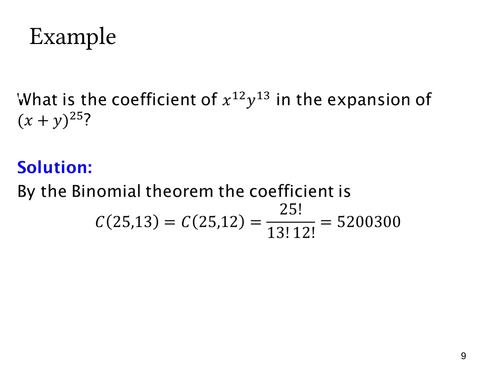

L1.7 · 第 9 页讲解原文
查看这一页课件

求 x¹²y¹³ 的系数
求 (x+y)25 中 x12y13 的系数，无需完整展开 26 项。
一般项为
(k25)x25−kyk.
与目标比较，y 的指数要求 k=13，而 25−k=12 也相符。因此系数为
C(25,13)=C(25,12)=13!12!25!=5200300.
组合解释是：25 个括号中，选 13 个取 y，余下 12 个取 x。也可选出那 12 个取 x 的括号，所以两种组合数相等。
检查指数之和是很有效的第一步：12+13=25，目标确实可能出现。若目标的两指数之和不等于 25，则在这个齐次展开中系数为零。
所求“系数”只是乘在 x12y13 前的数，不包含变量项本身。